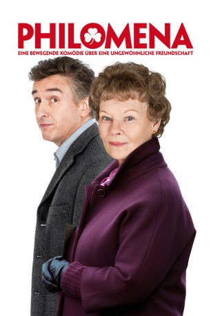

#3010 Philomena
Auszeichnungen: für 4 Oscars nominiert 1 BAFTA-Awards gewonnen
 gesehen am 19.01.2016
gesehen am 19.01.2016
 
 IMDB-Wertung: 7.6 / 10
IMDB-Wertung: 7.6 / 10  Metascore: 77
Metascore: 77 
Einst musste Philomena Lee ihr Kind zur Adoption freigeben, da sie unverheiratet ungewollt schwanger geworden war und somit den damalig herrschenden Moralvorstellungen Folge leisten musste. Nun, nach Jahren der Verzweiflung, will sie Vergangenes wieder gut machen und begibt sich auf die Suche nach ihrem verlorenen Kind. Dieses wurde allerdings nach Amerika verschifft…
Jahr: 2013
Dauer: 98 Minuten
FSK: 6
Land: England Studio: Square One EntertainmentTonspuren: DTS - ,
Untertitel: Deutsch,
Auflösung: 1080p (1920x1040) Größe: 6471 MB
Genre: Drama, Biographie
Regisseur:  Stephen Frears
Stephen Frears
Drehbuch: Steve Coogan, Jeff Pope, Martin Sixsmith
Soundtrack: Alexandre Desplat
Darsteller:
 Judi Dench als Philomena
Judi Dench als Philomena Steve Coogan als Martin Sixsmith
Steve Coogan als Martin Sixsmith Sophie Kennedy Clark als Young Philomena
Sophie Kennedy Clark als Young Philomena Mare Winningham als Mary
Mare Winningham als Mary Barbara Jefford als Sister Hildegarde
Barbara Jefford als Sister Hildegarde Peter Hermann als Pete Olsson
Peter Hermann als Pete Olsson Sean Mahon als Michael
Sean Mahon als Michael- Anna Maxwell Martin als Jane
 Michelle Fairley als Sally Mitchell
Michelle Fairley als Sally Mitchell Wunmi Mosaku als Young Nun
Wunmi Mosaku als Young Nun Charlie Murphy als Kathleen
Charlie Murphy als Kathleen- Cathy Belton als Sister Claire
 Kate Fleetwood als Young Sister Hildegarde
Kate Fleetwood als Young Sister Hildegarde- Charissa Shearer als Peg
- Nika McGuigan als Bridie
- Harrison D'Ampney als Anthony, 8-10 Years
- D.J. McGrath als John
- Simone Lahbib als Kate Sixsmith
 Sara Stewart als Marcia Weller
Sara Stewart als Marcia Weller- Gary Lilburn als Priest
 Charles Edwards als David
Charles Edwards als David Nicholas Jones als Dr. Robert
Nicholas Jones als Dr. Robert- Jordan King als Waitress
 Elliot Levey als Alex
Elliot Levey als Alex- Victoria Jane Appleton als Irish Waitress , uncredited
- Mai Arwas als Megan , uncredited
 Xavier Atkins als Michael Hess Aged 14 , uncredited
Xavier Atkins als Michael Hess Aged 14 , uncredited Jill Buchanan als Washington Hotel Guest , uncredited
Jill Buchanan als Washington Hotel Guest , uncredited Bern Collaco als Airplane Passenger , uncredited
Bern Collaco als Airplane Passenger , uncredited Graham Curry als Fairgoer , uncredited
Graham Curry als Fairgoer , uncredited Alan Davis als Lincoln Memorial Tourist , uncredited
Alan Davis als Lincoln Memorial Tourist , uncredited- Elise Edwards als Jogger , uncredited
- Nichola Fynn als Waitress , uncredited
 Neve Gachev als NYC Traveller , uncredited
Neve Gachev als NYC Traveller , uncredited- John Jillard Sr. als Lincoln Memorial Tourist , uncredited
- Timothy Paul Jobe als Doc Hess , uncredited
- Marcus LaRon als Jogger , uncredited
- Philomena Lee als Herself, in photo , uncredited
 Sid Man als Congregation Member , uncredited
Sid Man als Congregation Member , uncredited- Patricia Mantuano als Hotel Guest , uncredited
- Aaron Marcus als Priest , uncredited
 Hugh O'Brien als Fair Goer , uncredited
Hugh O'Brien als Fair Goer , uncredited- Pope John Paul II als Himself, in photo , uncredited
 Ronald Reagan als Himself , archive footage, uncredited
Ronald Reagan als Himself , archive footage, uncredited- Jane Russell als Herself, in photo , uncredited
- Al Sotto als Pedestrian , uncredited
 Julie Vollono als Passenger , uncredited
Julie Vollono als Passenger , uncredited Ruth McCabe als Mother Barbara
Ruth McCabe als Mother Barbara- Amy McAllister als Sister Anunciata
- Rachel Wilcock als Mamie
Datei: X:\2013(N-Z)\Philomena (2013, FSK6, 1920x1040).mkv seit 19.01.2016
Festplatte: HD 2013(I-Z)-2014(A-Z)
 Es gibt insgesamt 133 Filme in der Gruppe '2013(N-Z)'
Es gibt insgesamt 133 Filme in der Gruppe '2013(N-Z)'